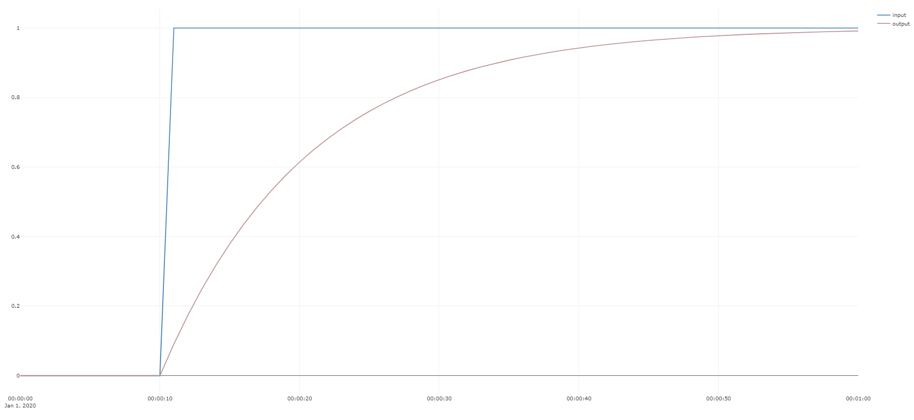

Example 1 : A simple "hello world"
Consider the example ex1_hello_world in Examples.cs:
public void Ex1_hello_world()
{
int timeBase_s = 1;
double filterTc_s = 10;
double[] input = TimeSeriesCreator.Step(11, 60, 0, 1);
LowPass lp = new LowPass(timeBase_s);
var output = lp.Filter(input, filterTc_s);
Plot.FromList(new List<double[]> { input, output},
new List<string> { "y1=V1_input","y1=V2_output"}, timeBase_s, "ex1_hello_world",
new DateTime(2020, 1, 1, 0, 0, 0));
}
Which when run should creates the following plot.

The line
int dT_s = 1;
specifies the sampling time, i.e. the number of seconds between each sample in the time-series, and both LowPass and
Plot require this information to correctly interpret the time-series.
The time-constant of the filter, expressed in seconds, is set by the line
double filterTc_s = 10;
.
The concept of the time-constant is very central in the domain of filters, control and dynamic systems. A time constant by a loose definition
the time it takes for a linear system to reach 67% of its next steady-state. In this example, a step change in inputat time t=10s, has reached
output=0.67 sometime between t=[21s,22s]. Another useful rule of thumb, is that a a linear system has reached to within 99% of it new steady-state by five times the
time constant, so in this case output exceeds 0.99 by t=59s.
The next line creates an array of doubles that describes the input to the filter. By means of Vec.Concat and Vec.Fill, this input is initialized to first 11 samples of
of the value 0, followed by 50 samples of the value one, a step-change, another important concept in the analysis of dynamic systems.
double[] input = Vec<double>.Concat(Vec<double>.Fill(0, 11),Vec<double>.Fill(1, 50));
The input array is filtered by a low-pass filter and, the resulting output is the second time-series vector considered in this example.
LowPass lp = new LowPass(dT_s);
var output = lp.Filter(input, filterTc_s);
The final action in this example is to plot the two time-series together:
Plot.FromList(new List<double[]> { input, output},
new List<string> { "y1=input","y1=output"}, dT_s, "ex1_hello_world",
new DateTime(2020, 1, 1, 0, 0, 0));
The first input to this method is the variables to plot as a List of doubles: new List<double[]> { input, output}. The Plot.FromList command can in principle handle
any number of inputs in this manner. The second variable determines what axes the variable is to be plotted on and what names to give each time-series trend in the legend.
The prefix y1= indicates that the variable is to be plotted on the left axes of the first subplot.
The string "ex1_hello_world" is displayed as the plot title, and new DateTime(2020, 1, 1, 0, 0, 0) determines that the plot is to start at midnight on on the first day of 2020.
Note
Try changing new List<string> { "y1=input","y1=output"} to new List<string> { "y1=input","y2=output"} and notice how output is now plotted on the right axes.
Then try new List<string> { "y1=input","y3=output"} and notice output is now plotted on a second subplot below the input.
Note
This is an example of transient data, as the variable output is in a transient state for a significant part of the dataset.
Note
Try dragging and zooming the plot, and using the scooter to reading the exact time and value off the output variable in each time step in the transient.
Notice that the plot.ly library provides an interactive menu of to the top right of the screen.